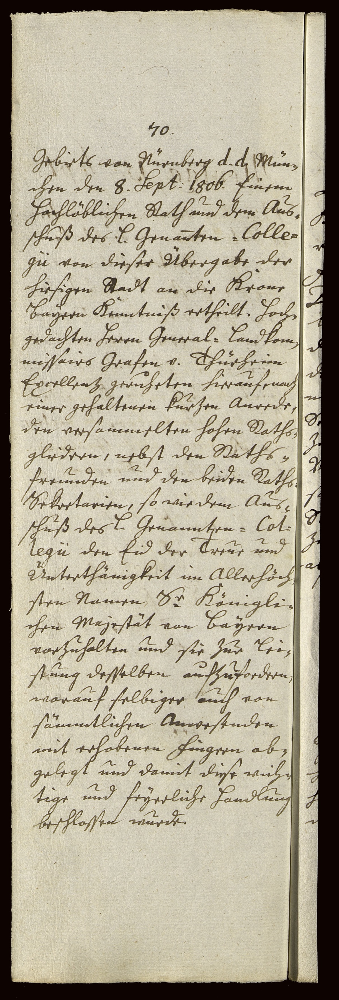

StA Nürnberg, Reichsstadt Nürnberg, Ratsverlässe, 4433, S. 69–70



Kommentar
Editor: magdalena.weileder@textgrid.de
Archiv: StA Nürnberg
Bestand: Reichsstadt Nürnberg, Ratsverlässe
Signatur: 4433, S. 69–70
Ort: Nürnberg
Datum: 1806 September 15
Schlagwort: Amtsbuch
Schwierigkeitsgrad: leicht
Kurzbetreff:
Ratsverlässe der Reichsstadt Nürnberg, Sitzungprotokoll
Ratsverlässe der Reichsstadt Nürnberg, Sitzungprotokoll
Schreiberhände:
- (S1)
Kommentar:
Entzifferung
(Absatz Beginn)
1 70.
2 Gebiets von Nürnberg d(e) d(ato)(Wechsel des Schriftsystems) Mün-
3 chen den 8. Sept(ember)(Wechsel des Schriftsystems) 1806. Einem
4 Hochlöblichen Rath und dem Aus-
5 schuß des L(öblichen) Genan(n)ten=Colle(Wechsel des Schriftsystems)-
6 gii(Wechsel des Schriftsystems) von dieser Übergabe der
7 hiesigen Stadt an die Krone
8 Baÿern Kenntniß ertheilt. Hoch-
9 gedachten Herrn General= Landkom-
10 missairs Grafen v(on) Thürheim
11 Excellenz geruheten hierauf, nach
12 einer gehaltenen kurzen Anrede,
13 den versammelten hohen Raths-
14 gliedern, nebst den Raths-
15 freunden und den beiden Raths-
16 Sekretarien, so wie dem Aus-
17 schuß des L(öblichen) Genannten= Col(Wechsel des Schriftsystems)-
18 legii(Wechsel des Schriftsystems) den Eid der Treue und
19 Unterthänigkeit in Allerhöch-
20 sten Namen S(eine)r Königli-
21 chen Majestät von Baÿern
22 vorzuhalten und sie zur Lei-
23 stung desselben aufzufordern,
24 worauf selbiger auch von
25 sämmtlichen Anwesenden
26 mit erhobenen Fingern ab-
27 gelegt und damit diese wich-
28 tige und feÿerliche Handlung
29 beschlossen wurde.
(Absatz Ende)
Transkription
(Absatz Beginn)
1 70.
2 Gebiets von Nürnberg de dato Mün-
3 chen den 8. September 1806 einem
4 hochlöblichen Rath und dem Aus-
5 schuß des Löblichen Genanntencolle-
6 gii von dieser Übergabe der
7 hiesigen Stadt an die Krone
8 Baÿern Kenntniß ertheilt. Hoch-
9 gedachten Herrn Generallandkom-
10 missairs Grafen von Thürheim
11 Excellenz geruheten hierauf, nach
12 einer gehaltenen kurzen Anrede
13 den versammelten hohen Raths-
14 gliedern nebst den Raths-
15 freunden und den beiden Raths-
16 Sekretarien, sowie dem Aus-
17 schuß des Löblichen Genanntencol-
18 legii den Eid der Treue und
19 Unterthänigkeit in allerhöch-
20 sten Namen Seiner königli-
21 chen Majestät von Baÿern
22 vorzuhalten und sie zur Lei-
23 stung desselben aufzufordern,
24 worauf selbiger auch von
25 sämmtlichen Anwesenden
26 mit erhobenen Fingern ab-
27 gelegt und damit diese wich-
28 tige und feÿerliche Handlung
29 beschlossen wurde.
(Absatz Ende)